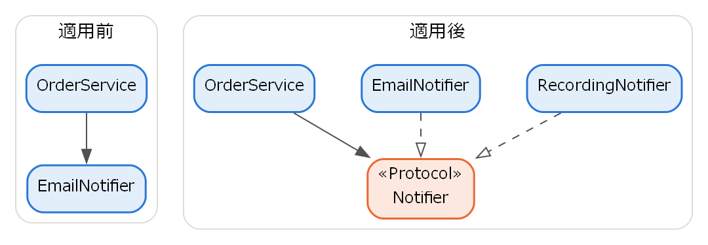

4. ソフトウェア設計の原則
設計とは、要求を満たすソフトウェアの構造を決める活動である。よい設計は、ソフトウェアを理解しやすく、変更しやすく、テストしやすくする。本章では、設計の良し悪しを判断するための基本的な原則を説明する。
4.1. 設計とは何か
設計は、扱う範囲によって次の 2 つに分けられる。
種類 |
内容 |
|---|---|
アーキテクチャ設計 |
システム全体をどのような構成要素に分け、それらをどのように連携させるかを決める。データベースや通信方式などの技術選択も含む（第 5 章）。 |
詳細設計 |
個々の構成要素の内部構造（クラス、関数、データ構造、アルゴリズム）を決める。 |
どちらの設計においても目標となるのは、変更の影響を局所化することである。第 1 章で述べたとおり、ソフトウェアは変更され続ける。変更のたびにシステム全体を修正する必要がある設計は、保守のコストを増大させる。以降で説明する原則は、いずれもこの目標を達成するためのものである。
4.2. 抽象化と情報隠蔽
抽象化とは、対象の本質的な性質だけに注目し、それ以外の詳細を無視することである。例えば、ファイルに書き込む関数を使う人は、ディスクのどのセクターにデータが書き込まれるかを知る必要はない。「ファイルに書き込む」という抽象化された操作だけを理解すればよい。
情報隠蔽は、Parnas が 1972 年に提唱した原則であり [Parnas1972]、変更される可能性の高い設計上の決定をモジュールの内部に隠し、外部からは公開されたインターフェースを通じてのみ利用させるというものである。隠された決定が変更されても、インターフェースが変わらなければ、そのモジュールを利用する側を修正する必要はない。
Python では、名前の先頭にアンダースコアを付けて（例: _items）内部用であることを示す慣習がある。言語として強制はされないが、利用者に対して「この名前に依存しないこと」を伝える役割を持つ。
4.3. モジュール化
モジュール化とは、システムを独立性の高い部品（モジュール）に分割することである。ここでのモジュールは、Python のモジュール（ファイル）に限らず、クラスや関数、パッケージ、サービスなどを広く指す。モジュール分割のよさは、凝集度と結合度という 2 つの尺度で評価できる。
4.3.1. 凝集度
凝集度は、1 つのモジュールの内部の要素がどれだけ強く関連しているかを表す尺度である。凝集度は高いほどよい。凝集度が高いモジュールは 1 つの明確な目的を持つため、理解しやすく、変更の理由も 1 つに限られる。凝集度は次のように分類される（上ほど凝集度が高い）。
種類 |
内容 |
|---|---|
機能的凝集 |
1 つの機能を実現するための要素だけが集まっている。 |
逐次的凝集 |
ある要素の出力が次の要素の入力になる、一連の処理が集まっている。 |
通信的凝集 |
同じデータを扱う処理が集まっている。 |
手順的凝集 |
決められた順序で実行される処理が集まっている。 |
時間的凝集 |
同じ時期（初期化時など）に実行される処理が集まっている。 |
論理的凝集 |
似た種類の処理が集まっており、引数などで実行する処理を切り替える。 |
偶発的凝集 |
関連のない処理が偶然集まっている。 |
4.3.2. 結合度
結合度は、モジュール同士がどれだけ強く依存しているかを表す尺度である。結合度は低いほどよい。結合度が低ければ、あるモジュールの変更が他のモジュールに波及しにくい。結合度は次のように分類される（上ほど結合度が低い）。
種類 |
内容 |
|---|---|
データ結合 |
必要なデータだけを引数として受け渡す。 |
スタンプ結合 |
構造体などのデータ構造全体を受け渡すが、その一部しか使わない。 |
制御結合 |
相手の処理内容を切り替えるためのフラグなどを受け渡す。 |
外部結合 |
外部で定められたデータ形式や通信方式などを共有する。 |
共通結合 |
複数のモジュールが同じグローバル変数を参照する。 |
内容結合 |
他のモジュールの内部データを直接参照・変更する。 |
「凝集度を高く、結合度を低く」は、モジュール分割の最も基本的な指針である。
4.4. SOLID 原則
SOLID 原則は、Robert C. Martin がオブジェクト指向設計の原則として整理した 5 つの原則の頭文字を並べたものである [Martin2017]。
原則 |
内容 |
|---|---|
単一責任の原則（SRP） |
モジュールを変更する理由は 1 つだけであるべきである。 |
開放閉鎖の原則（OCP） |
モジュールは拡張に対して開いており、修正に対して閉じているべきである。すなわち、既存のコードを修正せずに機能を追加できるようにする。 |
リスコフの置換原則（LSP） |
派生型は、その基本型と置き換えても正しく動作しなければならない。 |
インターフェース分離の原則（ISP） |
利用者が使わないメソッドへの依存を強制してはならない。大きなインターフェースは、利用者ごとの小さなインターフェースに分ける。 |
依存性逆転の原則（DIP） |
上位のモジュールは下位のモジュールに依存してはならない。どちらも抽象に依存すべきである。 |
ここでは、特に重要な単一責任の原則と依存性逆転の原則を、コードの例で説明する。
4.4.1. 単一責任の原則の例
次のクラスは、売上の集計、レポートの整形、ファイルへの保存という 3 つの責任を持っている。
1"""単一責任の原則を適用する前のコード（第 4 章）.
2
31 つのクラスが「売上の集計」「レポートの整形」「ファイルへの保存」という
43 つの責任を持っている。どれか 1 つの仕様が変わるだけでこのクラスを
5修正する必要があり、変更の影響範囲が広くなる。
6"""
7
8from pathlib import Path
9
10
11class SalesReport:
12 """売上の集計・整形・保存をすべて担当するクラス."""
13
14 def __init__(self, sales: dict[str, int]) -> None:
15 self.sales = sales
16
17 def total(self) -> int:
18 """売上の合計を返す."""
19 return sum(self.sales.values())
20
21 def to_text(self) -> str:
22 """レポートを文字列に整形する."""
23 lines = [f"{name}: {amount} 円" for name, amount in self.sales.items()]
24 lines.append(f"合計: {self.total()} 円")
25 return "\n".join(lines)
26
27 def save(self, path: Path) -> None:
28 """レポートをファイルに保存する."""
29 path.write_text(self.to_text(), encoding="utf-8")
30
31
32if __name__ == "__main__":
33 report = SalesReport({"りんご": 1200, "みかん": 800})
34 print(report.to_text())
ダウンロード: ch04_srp_before.py
このクラスは、集計方法が変わったとき、レポートの書式が変わったとき、保存先が変わったときのいずれでも修正が必要になる。変更の理由が 3 つあるため、単一責任の原則に反している。そこで、責任ごとにクラスを分割する。
1"""単一責任の原則を適用した後のコード（第 4 章）.
2
3集計・整形・保存の責任を別々のクラスに分けた。
4例えばレポートの書式を変えたいときは ``TextFormatter`` だけを修正すればよい。
5"""
6
7from pathlib import Path
8
9
10class SalesSummary:
11 """売上データを保持し、集計する."""
12
13 def __init__(self, sales: dict[str, int]) -> None:
14 self.sales = sales
15
16 def total(self) -> int:
17 """売上の合計を返す."""
18 return sum(self.sales.values())
19
20
21class TextFormatter:
22 """売上データをテキスト形式に整形する."""
23
24 def format(self, summary: SalesSummary) -> str:
25 """整形済みの文字列を返す."""
26 lines = [
27 f"{name}: {amount} 円" for name, amount in summary.sales.items()
28 ]
29 lines.append(f"合計: {summary.total()} 円")
30 return "\n".join(lines)
31
32
33class FileWriter:
34 """文字列をファイルに保存する."""
35
36 def write(self, path: Path, text: str) -> None:
37 """``text`` を UTF-8 で ``path`` に書き込む."""
38 path.write_text(text, encoding="utf-8")
39
40
41if __name__ == "__main__":
42 summary = SalesSummary({"りんご": 1200, "みかん": 800})
43 print(TextFormatter().format(summary))
ダウンロード: ch04_srp_after.py
分割後は、例えばレポートを CSV 形式で出力したくなった場合でも、新しい整形クラスを追加するだけでよく、集計や保存のクラスを修正する必要はない。
4.4.2. 依存性逆転の原則の例
次の例では、注文を受け付ける OrderService が、具体的な通知手段であるメール送信ではなく、抽象的な Notifier に依存している。適用前後の依存関係を図 4.1 に示す。

図 4.1 依存性逆転の原則の適用前と適用後（矢印は依存の向き、白抜きの三角形の破線は抽象を満たす関係を表す）
適用前は、上位の OrderService が下位の EmailNotifier に直接依存している。適用後は、EmailNotifier の側も抽象である Notifier を満たすように作られ、Notifier に依存する。下位のモジュールから上位の側で定めた抽象に向かって依存するため、依存の向きが逆転している。
1"""依存性逆転の原則の例（第 4 章）.
2
3上位モジュール ``OrderService`` は具体的な通知手段（メールなど）に依存せず、
4抽象 ``Notifier`` に依存する。通知手段を差し替えても ``OrderService`` は
5変更しなくてよく、テストでは偽物の通知手段を渡せる。
6"""
7
8from typing import Protocol
9
10
11class Notifier(Protocol):
12 """通知手段の抽象."""
13
14 def send(self, message: str) -> None:
15 """メッセージを送信する."""
16 ...
17
18
19class EmailNotifier:
20 """メールで通知する（ここでは画面表示で代用する）."""
21
22 def send(self, message: str) -> None:
23 print(f"[メール] {message}")
24
25
26class RecordingNotifier:
27 """送信内容を記録するだけの通知手段（テスト用）."""
28
29 def __init__(self) -> None:
30 self.messages: list[str] = []
31
32 def send(self, message: str) -> None:
33 self.messages.append(message)
34
35
36class OrderService:
37 """注文を受け付け、通知する."""
38
39 def __init__(self, notifier: Notifier) -> None:
40 self.notifier = notifier
41
42 def place_order(self, item: str, quantity: int) -> None:
43 """注文を受け付ける."""
44 if quantity <= 0:
45 raise ValueError("数量は 1 以上を指定すること")
46 self.notifier.send(f"{item} を {quantity} 個受け付けた")
47
48
49if __name__ == "__main__":
50 OrderService(EmailNotifier()).place_order("ノート", 3)
51
52 recorder = RecordingNotifier()
53 OrderService(recorder).place_order("ペン", 2)
54 print(recorder.messages)
ダウンロード: ch04_dip.py
Notifier は typing.Protocol を用いて定義しており、send メソッドを持つクラスであれば継承関係がなくても Notifier として扱える。OrderService は通知の具体的な方法を知らないため、メール以外の通知手段（チャットなど）に変更しても修正は不要である。また、テストでは実際にメールを送る代わりに RecordingNotifier を渡して、送信内容を確認できる。このように、依存する対象を外部から渡す手法を依存性の注入（Dependency Injection）と呼ぶ。
4.5. その他の設計原則
SOLID 原則のほかにも、次のような原則が広く知られている。
原則 |
内容 |
|---|---|
DRY（Don't Repeat Yourself） |
同じ知識を複数の場所に重複して書かない。重複があると、変更時にすべての箇所を修正しなければならず、修正漏れの原因となる。 |
KISS（Keep It Simple, Stupid） |
設計はできるだけ単純に保つ。 |
YAGNI（You Aren't Gonna Need It） |
現時点で必要のない機能は作らない。将来のための拡張は、実際に必要になってから行う。 |
これらの原則は互いに対立することもある。例えば、DRY を徹底して共通化を進めすぎると、本来は無関係なモジュール同士が共通部品を通じて結合してしまう。原則は機械的に適用するのではなく、その目的（変更の影響を局所化すること）を理解したうえで、状況に応じて判断する必要がある。
4.6. まとめ
設計の目標は、変更の影響を局所化することである。
情報隠蔽により、変更される可能性の高い決定をモジュールの内部に隠す。
モジュールは凝集度を高く、結合度を低くなるように分割する。
SOLID 原則などの設計原則は、目的を理解したうえで状況に応じて適用する。
4.7. 演習問題
解答例は「第 4 章の解答例」にある。
問題 4-1：ch04_srp_after.py に、売上データを CSV 形式に整形する CsvFormatter クラスを追加せよ。追加にあたって、既存のクラスを変更する必要はあったか。
問題 4-2：次の関数は、どの種類の結合度にあたるか。また、結合度を下げるにはどのように変更すればよいか。
1def output_report(report: str, mode: int) -> None:
2 if mode == 1:
3 print(report)
4 elif mode == 2:
5 with open("report.txt", "w", encoding="utf-8") as file:
6 file.write(report)
問題 4-3：DRY 原則を徹底しすぎると、どのような問題が起こり得るか。凝集度と結合度の観点から説明せよ。
4.8. 発展課題
演習問題より発展的な課題である。正解が 1 つに定まらないものも含む。解答例や解答の方針は「第 4 章の解答例」にある。
発展課題 4-A：ch04_srp_after.py では、レポートの整形とファイルへの保存を別のクラスに分けたが、それらを組み合わせて使う側は具体的なクラスに依存したままである。依存性逆転の原則を適用し、整形方法と保存先の両方を差し替えられる ReportService クラスを作成せよ。また、実際にファイルを作らずに ReportService をテストする単体テストを書け。